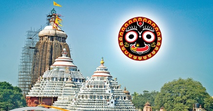

Jagannath Puri Dham
Puri is famous as the land of Lord Jagannatha, where the annual Rathayatra festival draws millions of devotees from all over the world. The state of Odisha is also famous as Utkala and Udradesh. It is situated between the Rushikulya and the Mahanadi rivers.
Glories of Jagannath Puri
Aisvarya-dhama
Aisvarya means “opulence.” The worship of Lord Jagannatha is carried out in great opulence, and the name, form, pastimes and abode of Lord evoke feelings of awe and reverence in the worshiper. The Lord resides in Sri Mandir with His consort Laksmi Devi.
Audarya-dhama
Audarya means “magnanimity.” Lord Jagannatha’s dealings are characterized by generosity, kindness and mercy. Therefore He is famous as Patita-pavana, “the savior of the fallen.”
Madhurya-dhama
Madhurya means “sweetness.” Although He is the Supreme Personality of Godhead, Lord Jagannatha deals with His devotees in an intimate way. Several devotees over the centuries bear testimony to this fact. Also Lord Caitanya during His stay in Puri displayed the sweet mode of intense love which the Vrajavasis felt in separation from Krishna.
Thus Jagannatha Puri has all three features simultaneously present: the opulence of Laksmi Devi in Dvaraka; the merciful magnanimity of Sri Caitanya Mahaprabhu; and the unlimited sweetness of the mood of the vrajagopis.
Thus Jagannatha Puri has all three features simultaneously present: the opulence of Laksmi Devi in Dvaraka; the merciful magnanimity of Sri Caitanya Mahaprabhu; and the unlimited sweetness of the mood of the vrajagopis.